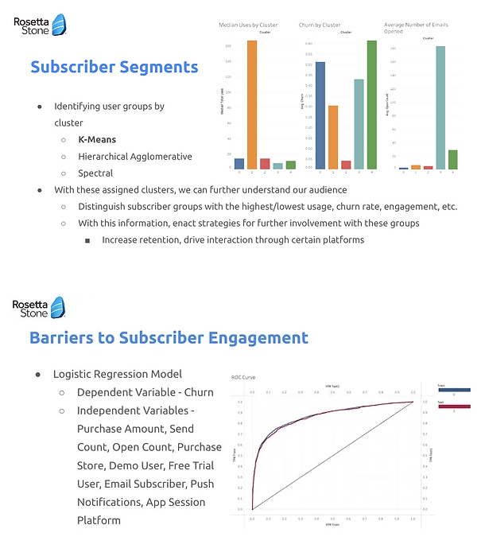
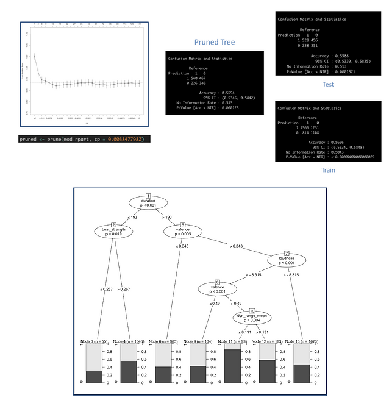

A constant curiosity of the world around me and a determination to make an impact is what fuels my work. My goal is to combine data analysis with strategic messaging to support informed decision-making and solutions.
I am currently an undergraduate student at Chapman University with a double major in Strategic and Corporate Communication and Data Science, expected to graduate in May 2024.
Please reach out to talk data, communication, and everything in between. I'd love to hear of any work or learning opportunities within these spheres and beyond. Find my contact info below!
Worked with a group to conduct an in-depth analysis of Rosetta Stone subscriber data, to ultimately provide customer segments and a business recommendation. The analytical process involved extensive collaboration to complete data cleaning, subscriber segmentation, identify target markets and engagement barriers, give insight into customer value, and outline relevant business opportunities.
Collaborated within a group to give insight to non-signed musicians on characteristics to retain listenership and prevent song skipping. Conducted an analysis to serve this business objective by preparing data with cleaning and exploratory statistics. Additionally, training, testing, and validating Logistic Regression, Decision Tree, and Random Forest models to present insightful findings in a business context.
In this analysis of a simulated active coffee shop, thoroughly engaged in processes such as data cleaning, building and testing linear regression, lasso regression and clustering models, and presented findings.